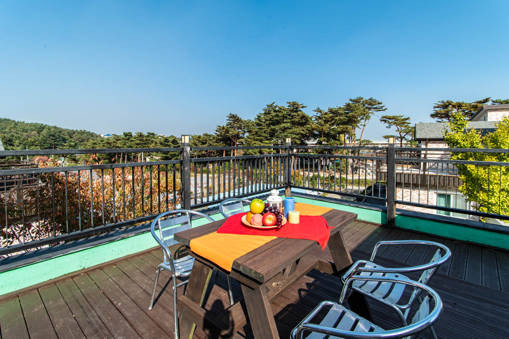
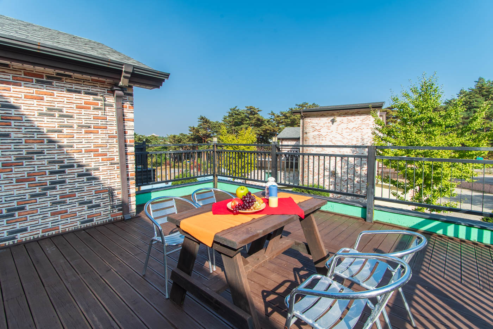

설악·속초 주변
추천 관광지
올리브 펜션 주변에는 속초와 설악산의 매력적인 명소들이 가득합니다. 자연, 문화, 미식을 모두 즐겨보세요.

차로 약 30분 · 20km
설악산 국립공원
울산바위, 비룡폭포, 신흥사 등 사계절 절경이 펼쳐지는 대한민국 대표 국립공원. 케이블카를 타면 권금성 파노라마 뷰가 압권입니다.

차로 약 2분 · 1.4km
척산온천휴양촌
알칼리성 단순천으로 피부에 좋은 온천수. 실내 온천풀 수압 마사지부터 실외 가족탕까지, 설악산을 바라보며 여유를 즐길 수 있습니다.

차로 약 12분 · 6.5km
속초해수욕장
맑고 투명한 동해 바다와 부드러운 모래사장. 인근에 신선한 해산물 조개구이 전문점과 감성 카페가 즐비합니다.

차로 약 11분 · 6.4km
신흥사
1,300년 역사를 지닌 설악산 고찰. 높이 14.6m의 통일대불과 울창한 금강송 숲길이 인상적인 사찰입니다.

차로 약 16분 · 7.8km
아바이마을
한국전쟁 이후 형성된 독특한 문화 공동체. 갯배 체험과 함흥냉면, 오징어순대 등 북방 음식의 현지화된 맛을 즐길 수 있습니다.

차로 약 16분 · 8.1km
속초 중앙시장
70년 역사의 속초 대표 전통시장. 닭강정, 오징어젓갈, 붉은대게 등 지역 특산물과 활어 회를 저렴하게 즐길 수 있습니다.

차로 약 12분 · 6.5km
속초아이 대관람차
높이 112m의 대형 관람차에서 속초해변과 청초호를 360도로 감상. 야간에는 도심과 바다 야경이 어우러져 SNS 인생샷 명소로 유명합니다.

차로 약 18분 · 8.9km
영금정
동해안 대표 일출 명소. 바다 위로 돌출된 절벽 위의 정자와 구름다리에서 새벽 일출을 감상하거나 야간 야경을 즐기기에 더없이 좋은 곳입니다.

차로 약 9분 · 4.7km
청초호
속초 시내 자연 친화적 호수. 둘레길 산책, 요트 마리나, 수상 자전거, 패들보드 등 다양한 액티비티와 철새 관찰을 즐길 수 있습니다.